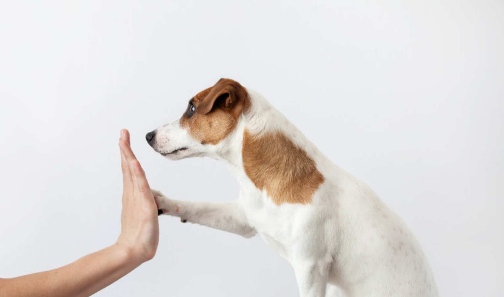
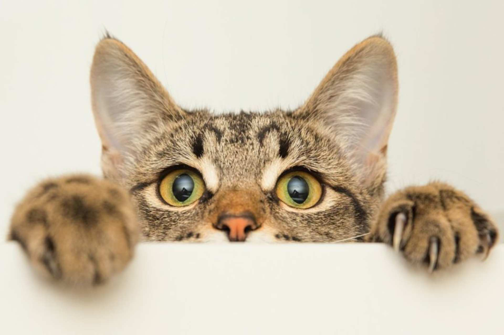
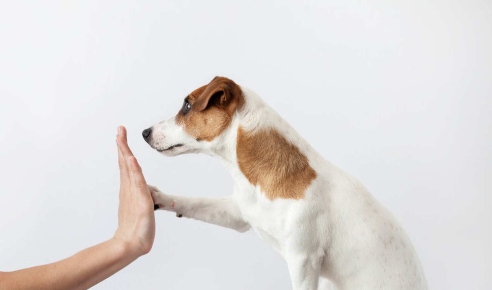
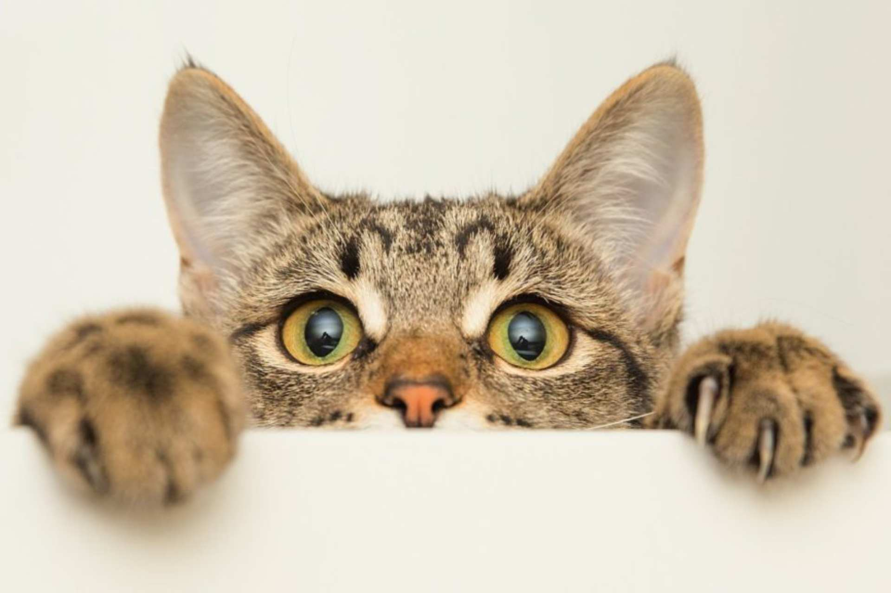

Pies jest symbolem bezinteresownej miłości i bezgranicznego oddania. Pies ma prawo do godnego bytu, nie może być ciągle strofowany i karcony. Mając zwierzę w domu należy dokładnie zrozumieć jego biologię oraz wymagania środowiskowe. Dla wielu osób pies jest członkiem rodziny i najlepszym przyjacielem. Dzięki takiemu postrzeganiu przyjaźń człowieka z psem może byc wielka i niezwykła.
Koty są często opisywane jako zwierzęta samotne. W rzeczywistości jednak są z natury towarzyskie. Relacja pomiędzy ludźmi a kotami domowymi przez tysiące lat nabrała cech symbiozy. Kot nie znosi złego traktowania i jest pod tym względem bardzo pamiętliwy. Dobrze traktowany, przywiązuje sie do swego właściciela i na swój sposób okazuje mu przyjazne uczucia.


Socjalizacja dorosłego psa wygląda inaczej niż socjalizacja szczeniaka, jednak podstawy pozostają zbliżone. Chodzi o zapoznanie psa ze światem, którego nie poznał wcześniej w bezpieczny i komfortowy sposób. U dorosłego psa będzie to trwało dłużej niż ze szczeniakiem...
Więcej
Zdecydowałem się przygarnąć kota. Nie czuję potrzeby posiadania rasowego, a również świadomość, że uszczęśliwię jakiegoś porzuconego, samotnego zwierzaka, jest dla mnie całkiem istotna. Bo ja kocham koty. Ale to widać zbyt mało, bo obecnie nie jest już tak jak kiedyś...
Więcej
Już sam przejazd ze schroniska do nowego domu może być dla psa bardzo stresujący. Standardowymi przejawami zdenerwowania są podkulony ogon, obnażone kły czy drżenie ciała. Okazywanie czułości w takim momencie może być dla zwierzęcia dodatkowym obciążeniem...
Więcej
 


